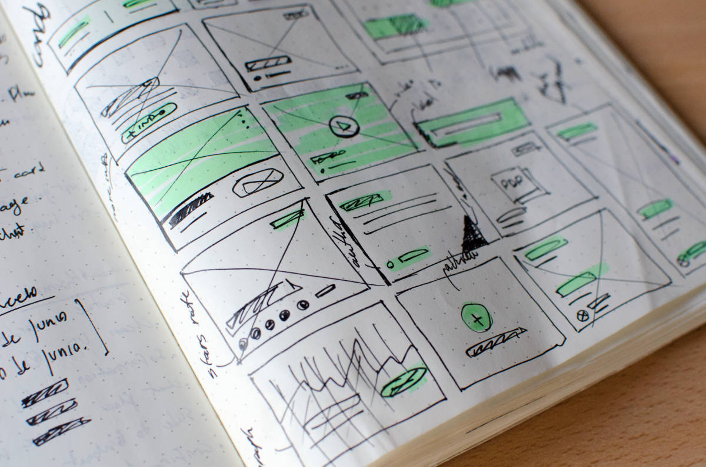
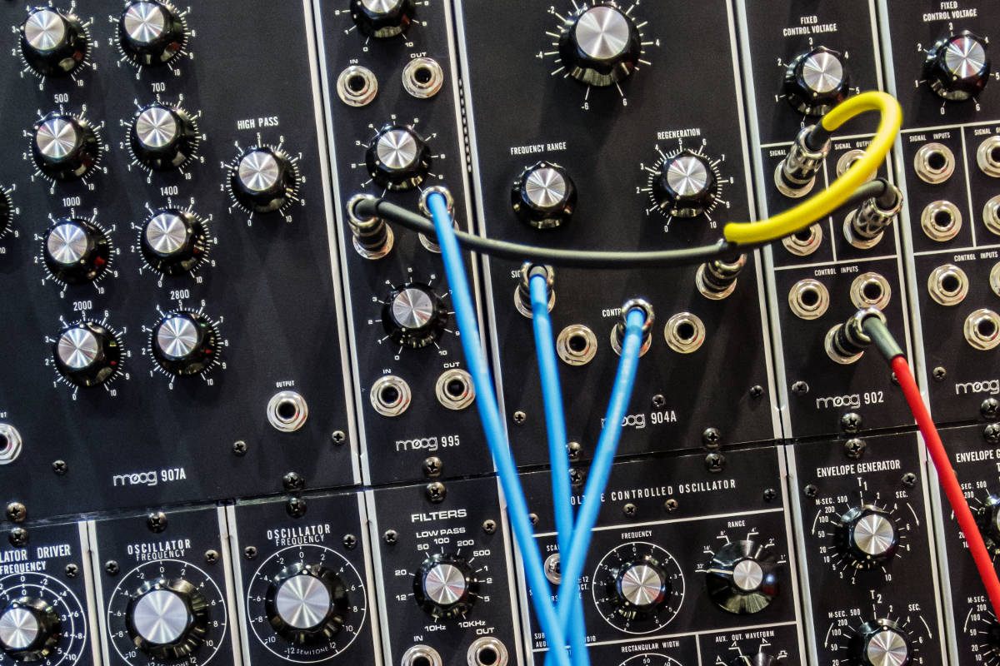

Prototyping
A free prototyping session can take up from a few hours to a full day, depending on the complexity of your domain.
During the prototyping session we will get to the core of your business process and model the needs and requirements in an Alan model in parallel. We will let you know which parts can supported by standard packages and where they need extension or replacement. If you have software you would like to keep using, we will propose to create an integration with it. By the end of the prototyping session you will know what is possible and you will be eager to finish what we started. We will plan a design sprint as soon as possible.
Design Sprint
At the end of a design sprint of two weeks, you will get a working system, according to your specifications. Together, we make sure the system fits your needs and delivers value to you
During a specification meeting, we will focus on getting a combination of valuable parts added to your Kjerner system and making sure we will be able to solve the problems you would like to see solved. Domain experts will need to be available during the specification meeting and available for questions during the sprint. At the end of the sprint, we will have valuable software that fits your needs perfectly, ready for deployment in the cloud or on-premise. If you need more, we can schedule a new design sprint right away - this will only happen for more complex domains.
Integrations
Next thing you need is a connection to your existing systems or a data migration from you old system. We are experienced in rapidly creating a connection to legacy software as well as most standard ERPs. Think days or weeks, depending on the complexity.
We can plan one or more integration sprints before, after or during any design sprint. Your Kjerner system stays flexible and can be changed and extended at any time.
Up&Running
When you are satisfied with the results and want to start using your new software, you can go right ahead.
You can provide your own on-premise virtual server for us to use or have us start a cloud service for you. You will pay a monthly or yearly fee to cover license, maintenance and hosting costs. Multiple plans are available.
Commitment
 There are plans available in which you will be able to have changes made with a short lead time. On a regular basis we will visit you to see how we can better support your organisation and let you stay up-to-date. We will take a snapshot of your current needs and one of the systems you have running, see how well they still match and suggest changes to close any gaps.
There are plans available in which you will be able to have changes made with a short lead time. On a regular basis we will visit you to see how we can better support your organisation and let you stay up-to-date. We will take a snapshot of your current needs and one of the systems you have running, see how well they still match and suggest changes to close any gaps.
We are committed to keep our customers our best advocates and make smaller and larger improvements to your systems at equally affordable rates as the initial solution.